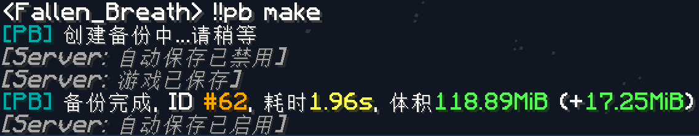
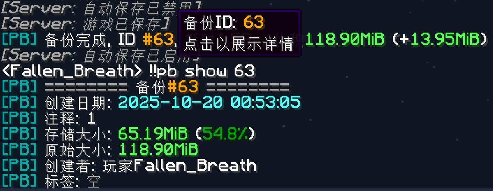

备份创建
创建一个备份
备份步骤¶
MCDR 环境¶
Prime Backup 目前仅支持在 MCDR 环境中进行备份创建
在 MCDR 环境中创建一个备份，只需执行如下指令：
!!pb make
就这样，非常简单的一条命令，即可创建一个备份
示例控制台输出：
> !!pb make
[MCDR] [00:46:11] [PB@51f5-worker-heavy/INFO] [prime_backup]: [PB] 创建备份中...请稍等
[Server] [00:46:11] [Server thread/INFO]: Automatic saving is now disabled
[Server] [00:46:11] [Server thread/INFO]: Saving the game (this may take a moment!)
[Server] [00:46:11] [Server thread/INFO]: ThreadedAnvilChunkStorage (world15): All chunks are saved
[Server] [00:46:11] [Server thread/INFO]: ThreadedAnvilChunkStorage (DIM-1): All chunks are saved
[Server] [00:46:11] [Server thread/INFO]: ThreadedAnvilChunkStorage (DIM1): All chunks are saved
[Server] [00:46:11] [Server thread/INFO]: Saved the game
[MCDR] [00:46:11] [PB@51f5-worker-heavy/INFO] [prime_backup]: Scanning file for backup creation at path 'server', targets: ['world']
[MCDR] [00:46:11] [PB@51f5-worker-heavy/INFO] [prime_backup]: Creating backup for ['world'] at path 'server', file cnt 4106, timestamp 1760892371872862, creator 'console:', comment '', tags {}
[MCDR] [00:46:12] [PB@51f5-worker-heavy/INFO] [prime_backup]: Create backup #59 done, +10 blobs (size 11.82MiB / 16.75MiB)
[MCDR] [00:46:12] [PB@51f5-worker-heavy/INFO] [prime_backup]: Time costs: save wait 0.1s, create backup 1.49s
[MCDR] [00:46:12] [PB@51f5-worker-heavy/INFO] [prime_backup]: [PB] 备份完成, ID #59, 耗时1.6s, 体积118.39MiB (+16.75MiB)
[Server] [00:46:12] [Server thread/INFO]: Automatic saving is now enabled
示例游戏内输出：

如需给备份带上个注释，便于后续查看备份时知道这个备份是做什么的，可以使用如下命令
!!pb make <注释>
如
!!pb make 香猪烤好了
在备份创建完后，可通过 !!pb show 或 !!pb list 命令来查看
具体操作步骤可参考 备份查看 文档

命令行环境¶
Prime Backup 暂不支持在命令行环境里创建备份（下次一定！）
相关配置¶
创建相关的配置基本位于下述两个小节：
下面列出了一些常用的配置项
| 选项 | 功能 |
|---|---|
| server.turn_off_auto_save | 在创建备份过程中，是否要临时关闭 MC 的自动保存 |
| backup.targets | 修改备份目标，调整要备份哪些文件 / 文件夹 |
| backup.ignore_patterns | 在备份时忽略某些文件，在回档时也删除这些文件 |
| backup.retain_patterns | 在备份时忽略某些文件，在回档时保留这些文件不变 |
| backup.creation_skip_missing_file | 在备份时跳过突然不存在的文件 |
| backup.hash_method | 哈希算法。PB 会复用哈希值一致的文件，以减少存储空间占用 |
| backup.compress_method | 压缩算法。PB 在储存文件时用的压缩算法 |
| concurrency | 最大并发数。根据系统资源适当调大此值，可加速计算哈希的速度 |
Note
对于 hash_method、compress_method 这两个配置项，建议在创建首个备份前就配置好。对于已创建了备份的环境，若需修改上述两个配置项，请注意：
hash_method配置项不可直接修改，若直接修改则会导致 PB 加载失败。需要使用!!pb database migrate_hash_method <xxx>命令来进行迁移compress_method配置项可直接修改，但修改后只影响新增的文件。如需修改存量数据的压缩算法，可使用!!pb database migrate_compress_method <xxx>命令
备份流程详解¶
下面将列出 PB 创建备份过程中的操作流程
- 与 MC 服务器进行交互，构造一个可创建备份的环境（下述操作均可配置）
- 使用例如
save-off的命令，关闭 MC 的自动保存 - 使用例如
save-all flush的命令，让 MC 保存存档数据至磁盘 - 等待 MC 输出例如
Saved the game的日志，此时存档保存完毕，可开始创建备份
- 使用例如
- 创建备份
- 扫描要备份的目标，排除忽略的文件，最终得到一个要备份的文件列表，并附有文件元信息
- 若可用的并发配置 > 1，则使用多线程预先计算每个要备份的文件的哈希值
- 对于每个要备份的文件，逐个进行：
- 计算哈希值。若之前计算过了，则直接复用
- 判断此哈希值的数据是否已备份过，若无则需复制一份数据至备份路径
- 将此文件的元信息、哈希值存入数据库中
- 计算此次备份的文件集，完成备份
- 还原对 MC 服务端的操作
- 若 MC 的自动保存被关闭了，将会在这里重新打开